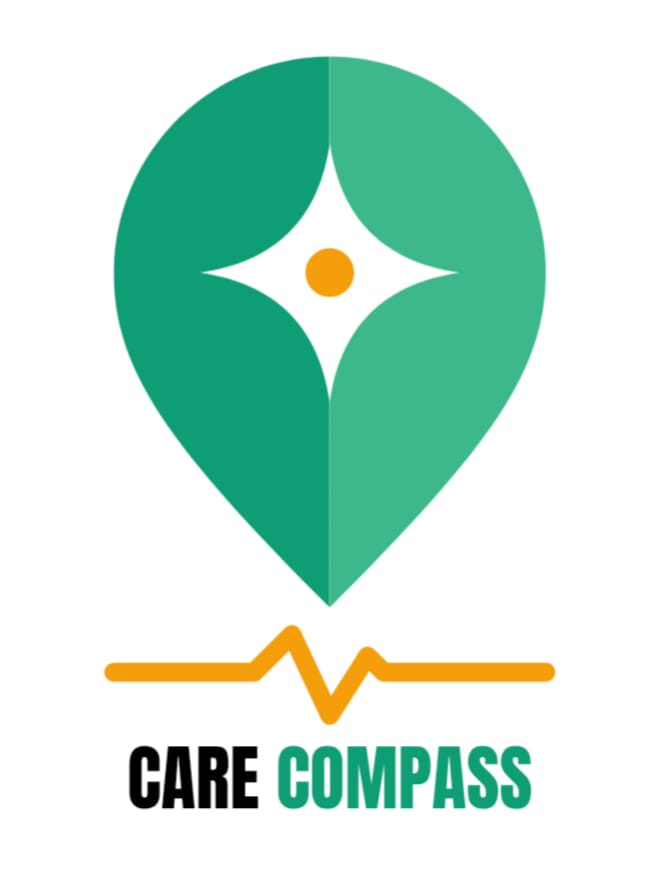

Rural healthcare companion
Healthcare in your language, in your village.
Simple healthcare guidance for rural families. Understand your symptoms, find nearby care and reach emergency help, all in one place.
✓ Guidance only, not a diagnosis.

Everything you need, in one place
How it works
Understand
Select your symptoms and get simple guidance.
Locate
Find a hospital or clinic near you.
Connect
Call an emergency number with one tap when you need it.
Use Care Compass in Tamil
Tap the language button at the top. Then use Listen to hear guidance and Speak to describe your symptoms.